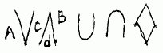

Беседа 3726 от 3877 · Беинса Дуно
Една мярка
"Отче наш"
"Зора се светла зазорява"
Тема имате ли зададена? – Нямаме.
Кои бяха положенията на миналата лекция? (Каза се)
Допуснете, че ви дадат един паяк да го възпитате. Как ще започнете да го възпитавате? Как ще развъждате паяците? Представете си, че имате нужда да развъждате паяци, както има нужда от буби.
Човек, след като живее 120 години, кое остава в него, което трябва да обиква? Кое човек обича най-вече? Ако ви попитат, какво обичат децата и какво обичат старите хора, кое им е най-обичното? Какво ще кажете? След като си се уморил, кое е най-приятното? Почивката. След като си почивал дълго време, кое е най-приятно? Представете си, че човек обича да се гневи, трябва да се гневи. Гневът е едно чувство. Колко време продължава гневът? Кое е най-късото време за гнева и кое е най-дългото? За пример, ако вземеш хляба на един човек, той може да ви се разсърди; ако му дадеш един хляб, той може да те обикне. Защо в първия случай, ако вземеш хляба на един човек, ще се разсърди, а като му дадеш хляб, те обиква? Някой човек те удари с един камък, нали ти е дал нещо, защо се сърдиш? Значи, не всякога даването е приятно. Зависи как се дава. По аналогия може да извадите ония думи, които са от естеството на камъка. Като те блъсне една дума, ти е неприятно. Допуснете, ти си гладен и някой те удари с една ябълка. Тогава няма да се разсърдиш, но ще вземеш ябълката. Съдържанието, което ябълката има, спасява положението. Коя е най-взривната дума в българския език, която експлодира много, която, като ти (я) кажат, човек се запали от четири страни? Една голяма кухина има в средата на ухото. У разните музиканти, с разни способности, разно е устроена тази кухина. Наблюдавайте ухото на Сашо Попов, на всичките професори в Музикалната академия, направете скици, снимки на ухото и ще имате много интересни наблюдения. На честните хора другояче е устроено ухото, на поетите, на философите, на държавниците, на щедрите хора, на скържавите хора разно са устроени ушите. На един скържав човек ухото не е както на щедрия. Всяка година, когато имало повече дъжд, по-голямо е разстоянието от новия израстък за тая година. Когато имало много дъжд, заколът е по-голям. Когато имало по-малко дъжд, заколът е по-малък. Ако разгледате вълната, тя е като тросък*. С тази дума – заколът – какво иска да каже? Казвате: Заколът* му е такъв.
Сега, ако ви дадат да си направите избор, какъв избор бихте направили? Ако ви кажат, в дадения случай, да пожелаете само едно нещо, което ще ви се даде, какво бихте желали? Ако всинца сте гладни, едно нещо ще пожелаете – хляб. Ситите хора желаят друго. Някои от ситите хора може да пожелаят обувки, шапка, часовник, някой пръстен. Когато хората са сити, имат големи, разнообразни желания. Тогава може да извадите заключението: когато хората много желаят – сити са. Когато малко желаят, гладни са.
Изпейте думата "благост". Изпейте думата "милосърдие". Ние имаме една песен "Милосърдие". Вие ще се повлияете от нея. Изпейте "Пролет дойде". Понеже две съгласни има, мъчно се пее. Една съгласна и една гласна по-лесно се пее. Каква е разликата между благост и милосърдие? Благото не е сладко. Добре, бедните хора при кои отиват най-вече? При онези, които са щедри. Малките тревици, които израстват, нали са бедняци? Към кого отиват? Към слънцето. Всички отивате към него. Казвате: Дайте, ние тук съвсем обедняхме. Веднага малките хора отиват нагоре, големите хора слизат надолу. Тогава да определим. Ако някой пита, може да се определи – надолу ли отиваш или нагоре отиваш. Ако надолу слизаш, богат си, ако нагоре отиваш, сиромах си, малък си. Малките хора нагоре отиват. Сега, някой път, вие искате да слезете надолу, какво е вашето състояние? Не искаш да слезеш надолу. Казваш: Не може да сляза надолу, защото не съм богат. Като сляза, трябва да давам, пък нямам. Нали, случва се, че сте недоволен. Ставате сутрин, недоволен сте, неразположен сте. Вие, по някой път как се справяте с вашето недоволство, когато сте неразположени? Някой път забравил си да вземеш хляб. Пътуваш 3-4 км, потърсиш, гледаш – хляб си забравил. Какво е състоянието, когато си забравил хляб да си вземеш? Ако имаш някой слуга, ще му се караш: как тъй да не вземе хляб; на себе си караш ли се? Ако искате да си създадете интерес, направите си на вратата секретен ключ. Често забравяте ключа си вътре, като излезете навън. При секретния ключ, като се пазиш от хората, пазиш се от себе си вече.

С какво ще премерите една мярка. За една мярка, колко идеи може да имат хората? Щом с една и съща мярка мерите, в премерените работи може да има различие, но за самата мярка няма. Понеже любовта е мярка за всички, затуй тя е несъизмерима. В измерените неща с любов има различие, но любовта като мярка няма различие. Неща, направени по любов, нямат погрешка. Когато са мерени с две мерки, там има погрешка. Всички погрешки стават, когато мерим с две мерки. Имате тия линии. Тия линии в органическия свят коренно се различават.
Един нос с такава линия показва съвсем друг характер. Нос с линията А показва един характер, а този с линия С – съвсем друг характер. Ако човек пише криви линии, те се отразяват върху носа или върху очите. Може да се изопачи човешкият характер. У хищните птици ноктите са закривени. Дълго време като имали желание да хванат нещо, ноктите са се завъртели, и клюнът им и човката, и тя се завъртяла. Желанието у тях – да хващат, обърнало ноктите и носа им на куки. Казвам: В ред поколения една и съща мисъл ако работи, ще даде известни резултати. У птиците, желанието да хващат е завъртяло горния клюн на човката. Човек, в мисълта си, трябва да бъде много умен. И в чувствата си, и в постъпките си да бъде много умен. Много пъти хората изкривяват краката си; някой път хората изядат обущата си при пръстите. Това показва, че са много предпазливи, като котка стъпват. Онези, упоритите, изядат тока си отзад. Тия хора, които са много упорити, бият на петите и нервни стават. Като стъпваш на петата си, става сътресение на гръбначния стълб и в последствие на това, човек става нервен. Някои хора стъпват на ходилото си. Някои от вас, които сте нервни, трябва да се научите да ходите, да не стъпвате на петите си първо.
Както е построен човешкият крак, има три свивки. Една при стъпалото, една при коляното и една горе при бедрото. Човек трябва да знае, колко да свива крака си. При петата кракът се свива напред; при коляното е точно обратното, кракът се свива назад; при бедрото се свива също както при петата. Човек трябва да знае, колко да свива крака си, защото всичко това се отразява върху характера. Горната свивка при бедрото, ако човек я свива неестествено, ще се отрази върху физическото тяло, (при) коляното ще се отрази върху сърцето, а долната свивка при петата ще се отрази върху ума. Ако човек не знае как да свие ръката си при рамото, то това ще се отрази върху тялото. Ако не знае да свива ръката си при лакътя, ще се отрази върху сърцето, а свивката при китката се отразява върху ума. Хората искат да се възпитават. Човек може да се възпитава, като свива ръката си. Вдигането на ръката при рамото действа на физическото тяло. Ако човек свие раменете си надолу и напред, той не може да бъде здрав. Що са енергични птиците? Понеже хвъркат с крилете си. Някой път, за да се лекувате, трябва да вдигате ръцете си напред. И затова ние правим упражненията. По 5-19 минути може да правиш и с ръцете си, тогава ще бъдеш по-здрав, отколкото, ако бъдеш огънат. После, като искаш да мислиш, трябва да знаеш как да свиваш пръстите си. Ако не знаеш правилно да свиваш ръката си при китката и да свиваш пръстите си добре, не може да развиваш ума си правилно. За пример, слаба ви е волята. Ще протегнеш ръката си напред, ще отвориш пръстите си, после полека започваш да свиваш ръката си на юмрук и поставяш палеца отгоре. Отваряш ръката си полека, после пак свиваш ръката си на юмрук с палеца отгоре. Страх те е да излизаш вечерно време. Защо? Волята ти е слаба. Започни да свиваш ръката си на юмрук. Първата вечер няма да можеш да излезеш, но 5-6 вечери като свиваш ръката си на юмрук, ще станеш по-смел. Ако не се употребяват ръцете, трябва всяко свиване да става правилно, трябва енергия на волята. Затуй, като правите гимнастиката, трябват много хармонични движения, за да се развива хармонично целия организъм. За пример някои от вас започнете да свивате показалеца, после средния пръст, после безименния и после малкия пръст. После, по някой път опитайте да отделите пръстите един от друг. Най-напред отделете малкия пръст, после безименния, после средния, после показалеца. След упражнението – двете ръце едновременно.
Казвате: Пролет. Пролет се пролива. Как бихте изпели "а"- то? То е натоварен тон. Когато искате да натоварите един тон, пейте "а". "А"-то е натоварен тон. В йероглифите този знак е означавал човек в движение. Обърнат нагоре, този знак дава нашето днешно "у". Едното е нагоре с краката, другото е надолу (нагоре) с главата. "У"-то у българите показва чаша. Българинът показва, че е практичен. За пример, вие искате да пеете. Щом има публика, събуди се у вас осторожността, предпазливостта и имате свиване на гърлото. Значи, в музиката най-първо трябва да събудите едно чувство, което има сродство. Страхът ограничава музиката. Казва: Не пей, ще се компрометираш. В музиката трябва да събудите най-първо вярата като мисловен акт. След вярата трябва да събудите надеждата, понеже надеждата е акт на сърцето, а любовта е обект на душата. Дайте на български една такава дума, която може да се пее. Ако бихте направили една песен, с коя дума бихте започнали песента? Ако ви дадат думите: "висок е моя идеал, към който се стремя". Как ще го изпеете? На себе си ако пеете: "висок е моя идеал", как бихте го изпели? Как ще изпеете думата "висок"? Много лесно ще го изпеете. "Ви" – значи вие, нещо, което се навива, значи още и вие. Имате "ви" и "сок", станало "висок". Първите думи са били съюзите, след туй са дошли глаголите, след туй прилагателните, местоименията, причастията. Първите думи, които са се явили в света, са съюзите. Доста думи са заети от природата. Много интересно е как се е създал езикът. (Учителят пее думата "висок"). "Ви" – значи – отдолу почва. Соковете винаги слизат отгоре. "Сок" никога не излиза отдолу. "Сок" на български какво означава? "С"- то е туй, което дава, което отразява нещата. То е изпъкнало огледало, не вдлъбнато. Лицето е "С", изпъкнало огледало, изпраща, дава. "Висок" винаги излиза от едно изпъкнало огледало. (Учителят пее думата "висок") Който и да е от вас, колкото и да е неразположен, като му се изпее така, ще му изчезне неразположението. Има думи, които могат да сменят едно неразположение на човека. Едно неразположение зависи от натрупването на една енергия, която търси място да излезе. Има думи, които поглъщат, поемат тая енергия. Човек може да се освободи от някой акт неразумен. (Учителят пее "висок"). "Ви" произлиза от ума; при "ви" умът е работил да го възприеме. "Сок" е излязло от сърцето. Съдържанието на ума отдолу е дошло, а на сърцето отгоре. Като се съединили, станало "висок".
Само светлият път на Мъдростта води към Истината. В Истината е скрит животът.
25. Лекция на Младежкия окултен клас, държана от Учителя на 16.IV.1943г., Петък – 5 ч. с., София – Изгрев
----
* тросък - трева, троскот (диал.)
* закол (злак) - прясна, свежа зеленина (нар.поет.)